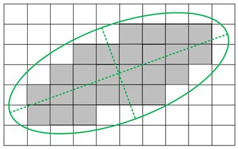

|
类型 |
几何分析 |
|
描述 |
计算轮廓的特征椭圆参数  别名：ZV_ContEllipAxis |
|
语法 |
ZV_ContEllipticAxis(cont,tabId)
参数： cont：ZVOBJECT类型，轮廓 tabId：TABLE索引，输出参数，计算的特征椭圆参数，依次为majorLen、minorLen、angle等3个参数,即椭圆主轴长度、短轴长度、主轴与水平轴的角度 |
|
适用控制器 |
支持ZV功能或者5系列以上的控制器 |
|
例子 |
ZVOBJECT img,img_bw,cont_list ZV_ImgRead(img,"count1.jpg",0) '读取图片 ZV_ImpThresh(img,img_bw,200,255) '图像二值化 ZV_ContGen(img_bw,cont_list,1,0) '查找轮廓
ZVOBJECT cont ZV_ObjSelect(cont_list,cont,0) '获取第一个轮廓 ZV_ContEllipticAxis(cont,0) '轮廓特征椭圆，参数存于TABLE中 ?"特征椭圆参数:",TABLE(0),TABLE(1),TABLE(2) |